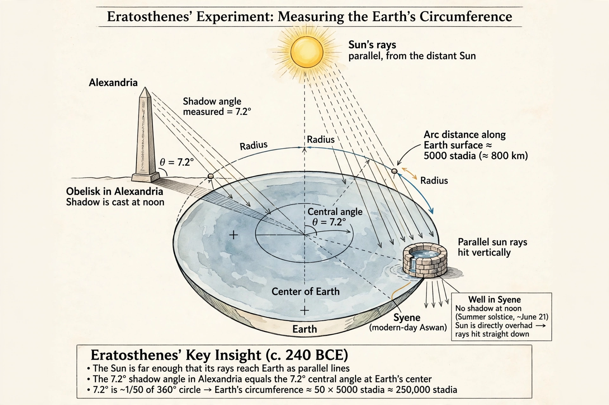

Wikipedia — the free encyclopedia
| Born | c. 276 BC, Cyrene |
| Died | c. 194 BC, Alexandria |
| Role | Chief librarian of Alexandria |
| Known for | Measuring Earth's circumference; sieve of Eratosthenes |

Eratosthenes' measurement of Earth's circumference from the Sun's shadow at Alexandria and Syene.
Eratosthenes of Cyrene (c. 276 – c. 194 BC) was a Greek polymath — mathematician, geographer, astronomer and poet — who served as chief librarian at the great Library of Alexandria. He is often called the founder of geography as a discipline, and he coined the word itself in Greek.
He is also remembered in mathematics for the sieve of Eratosthenes, a simple method of finding prime numbers by striking out multiples.
Eratosthenes made the first measurement of Earth's circumference whose method survives. He had heard that at Syene (modern Aswan), at noon on the summer solstice, the Sun stood exactly overhead — shining straight down a well — while at Alexandria, taken to be due north, a vertical rod cast a shadow showing the Sun 7.2° from the zenith, one fiftieth of a circle. Multiplying the known distance between the cities, about 5,000 stadia, by 50 gave a circumference of 250,000 stadia — within a few percent of the true value, though the exact accuracy depends on which stadium unit he used.
He went on to draw one of the first maps of the world incorporating parallels and meridians, laying foundations that Hipparchus and Ptolemy would build on.